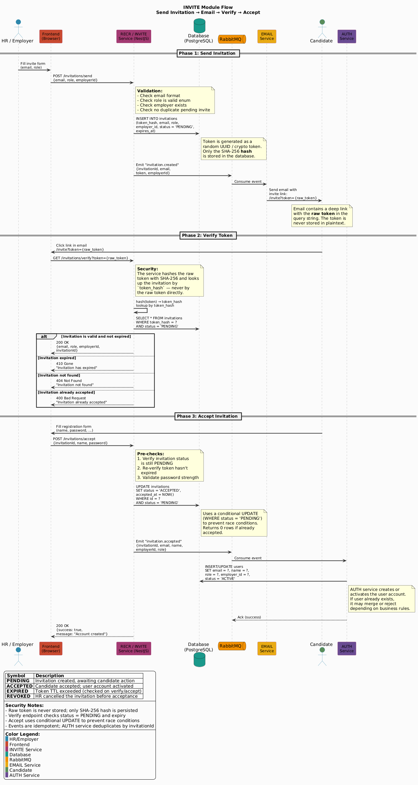

Technical Design Specification
Invitation Management Module
INVITE
1. Overview
1.1 Purpose
This document describes the technical design decisions for the Invitation Management module.
1.2 Requirements Addressed
| Category | Requirement IDs | Design Section |
|---|
| Functional | FR-001 - FR-008 | Section 3, 5 |
| Non-Functional | NFR-001 - NFR-007 | Section 7 |
2. Architecture
2.1 Architecture Style
| Aspect | Decision | Resolves |
|---|
| Pattern | NestJS Module (Microservice / Monolith module) | NFR-006 |
| ORM | Drizzle ORM | All data requirements |
| Database | PostgreSQL (invite_db) | NFR-006 |
| Message Broker | RabbitMQ (async events) | FR-003 |
| Token Strategy | SHA-256 hash (storage) + raw token (URL) | NFR-004 |
2.2 Key Design Decisions
| # | Decision | Rationale | Resolves |
|---|
| 1 | SHA-256 token hashing |
Raw tokens never stored in DB; prevents token leakage from database compromise |
NFR-004 |
| 2 | RabbitMQ for email events |
Decoupled email sending; allows retry and scalability |
FR-003, NFR-002 |
| 3 | Public verify endpoint |
Allows unauthenticated users to view invitation details before accepting |
FR-004 |
| 4 | Configurable token expiry |
7-day default with environment variable override for flexibility |
NFR-001 |
| 5 | Redis-based rate limiting |
Fast lookup, TTL support for hourly rate limits |
NFR-003 |
| 6 | Cross-module event publishing |
invitation.accepted event triggers AUTH module for account creation |
FR-005 |
3. Component Design
3.1 Component Diagram

Figure 1: INVITE Module Components
3.2 Module Structure
src/
invite/
invite.module.ts
invite.controller.ts
invite.service.ts
invite.guard.ts
invite.consumer.ts # RabbitMQ consumer (if needed)
dto/
send-invitation.dto.ts
accept-invitation.dto.ts
verify-invitation.dto.ts
entities/
invitation.entity.ts
utils/
token.util.ts # SHA-256 hash generation
3.3 Component Responsibilities
| Component | Responsibility | File |
|---|
| InviteController | Handle HTTP requests for all invitation endpoints | invite.controller.ts |
| InviteService | Business logic: token generation, validation, status management | invite.service.ts |
| InviteGuard | Authorization: validate user has HR/Employer role | invite.guard.ts |
| InviteConsumer | Handle RabbitMQ events (if async processing needed) | invite.consumer.ts |
| TokenUtil | Generate secure tokens and compute SHA-256 hashes | utils/token.util.ts |
3.3 Component to Requirements Mapping
| Component | Responsibility | Resolves |
|---|
| InviteController | Route handling, request validation, response formatting | FR-001 - FR-008 |
| InviteService | Token generation, SHA-256 hashing, status transitions, event publishing | FR-002, FR-003, FR-005 |
| InviteGuard | Role-based access control for send/revoke/resend | NFR-005 |
| TokenUtil | Cryptographic token operations | NFR-004 |
4. Data Architecture
4.1 Database
Database: invite_db (PostgreSQL)
Refer to: Database Design
4.2 Data Requirements Resolution
| SRS Requirement | Design Solution | DB Table |
|---|
| FR-001 Send Invitation | Insert invitation record with token_hash | invitations |
| FR-002 Generate Token | SHA-256 hash stored, raw token in URL only | invitations.token_hash |
| FR-004 Verify Token | Lookup by token_hash, check status and expiry | invitations |
| FR-005 Accept Invitation | Update status to ACCEPTED, set accepted_at | invitations |
| FR-006 Revoke Invitation | Update status to REVOKED | invitations |
| FR-007 List Invitations | Query with filters (employer_id, status) and pagination | invitations |
| FR-008 Resend Invitation | Generate new token_hash, update expired_at | invitations |
5. API Design
5.1 Endpoint to Requirements Mapping
| Method | Path | Description | Resolves |
|---|
| POST | /invitations/send | Send invitation to email | FR-001, FR-002, FR-003 |
| GET | /invitations/verify | Verify invitation token (public) | FR-004 |
| POST | /invitations/accept | Accept invitation | FR-005 |
| GET | /invitations | List invitations with filters | FR-007 |
| DELETE | /invitations/:id | Revoke invitation | FR-006 |
| POST | /invitations/:id/resend | Resend invitation | FR-008 |
6. Integration Flows
6.1 Send Invitation Flow
Activity Diagram
Figure 2: Send Invitation Activity Flow
Sequence Diagram
Figure 3: Send Invitation Sequence Flow
Flow Steps
| Step | Component | Action |
|---|
| 1 | InviteController | Receive POST /invitations/send request |
| 2 | InviteGuard | Validate user has HR or Employer role |
| 3 | InviteService | Validate input (email, role, no self-invite) |
| 4 | TokenUtil | Generate secure random token |
| 5 | TokenUtil | Compute SHA-256 hash of token |
| 6 | InviteService | Insert invitation record with token_hash |
| 7 | InviteService | Publish invitation.created event to RabbitMQ |
| 8 | EMAIL Module | Send invitation email with raw token in URL |
6.2 Verify Invitation Flow
Activity Diagram
Figure 4: Verify Invitation Activity Flow
Sequence Diagram
Figure 5: Verify Invitation Sequence Flow
Flow Steps
| Step | Component | Action |
|---|
| 1 | Frontend | Extract raw token from URL query parameter |
| 2 | InviteController | Receive GET /invitations/verify?token={raw_token} |
| 3 | TokenUtil | Compute SHA-256 hash of provided token |
| 4 | InviteService | Lookup invitation by token_hash |
| 5 | InviteService | Validate status is PENDING and not expired |
| 6 | InviteController | Return invitation details (email, role, employer_id) |
6.3 Accept Invitation Flow
Activity Diagram
Figure 6: Accept Invitation Activity Flow
Sequence Diagram
Figure 7: Accept Invitation Sequence Flow
Flow Steps
| Step | Component | Action |
|---|
| 1 | Frontend | Candidate fills registration form |
| 2 | InviteController | Receive POST /invitations/accept with token and user data |
| 3 | InviteService | Validate logged-in user email matches invitation |
| 4 | InviteService | Validate invitation is PENDING and not expired |
| 5 | InviteService | Update status to ACCEPTED, set accepted_at |
| 6 | InviteService | Publish invitation.accepted event to RabbitMQ |
| 7 | AUTH Module | Create/activate user account and assign organization role |
6.4 Revoke Invitation Flow
Activity Diagram
Figure 8: Revoke Invitation Activity Flow
Sequence Diagram
Figure 9: Revoke Invitation Sequence Flow
Flow Steps
| Step | Component | Action |
|---|
| 1 | InviteController | Receive DELETE /invitations/:id |
| 2 | InviteGuard | Validate user is inviter or admin |
| 3 | InviteService | Validate invitation is PENDING |
| 4 | InviteService | Update status to REVOKED |
| 5 | InviteController | Return success response |
6.5 Resend Invitation Flow
Activity Diagram
Figure 10: Resend Invitation Activity Flow
Sequence Diagram
Figure 11: Resend Invitation Sequence Flow
Flow Steps
| Step | Component | Action |
|---|
| 1 | InviteController | Receive POST /invitations/:id/resend |
| 2 | InviteGuard | Validate user is inviter or admin |
| 3 | InviteService | Validate invitation is EXPIRED or REVOKED |
| 4 | TokenUtil | Generate new secure token |
| 5 | TokenUtil | Compute new SHA-256 hash |
| 6 | InviteService | Update token_hash, status to PENDING, set new expired_at |
| 7 | InviteService | Publish invitation.created event to RabbitMQ |
| 8 | EMAIL Module | Send new invitation email |
7. Security Design
| SRS Requirement | Design Solution | Implementation |
|---|
| NFR-001 Token expiry |
Configurable expiry with 7-day default |
Environment variable INVITE_TOKEN_EXPIRY_DAYS=7 |
| NFR-003 Rate limiting |
Redis-based rate limiter |
10 invitations per hour per user |
| NFR-004 Token storage |
SHA-256 hash only in database |
crypto.createHash('sha256').update(rawToken).digest('hex') |
| NFR-005 Ownership validation |
Authorization check on revoke/resend |
InviteGuard validates inviter_id or admin role |
7.1 Token Security
| Aspect | Implementation |
|---|
| Token generation | crypto.randomBytes(32).toString('base64url') |
| Token storage | SHA-256 hash only (raw token never in DB) |
| Token delivery | Raw token in URL: https://app.example.com/invite?token={raw_token} |
| Token verification | Compute hash of provided token, lookup by token_hash |
| Token uniqueness | UNIQUE constraint on token_hash column |
8. Cross-Module Integration
8.1 Integration Summary
| Target Module | Integration Type | Direction | Description |
|---|
| AUTH | Sync (API Call) | INVITE → AUTH | Create/activate user account on invitation acceptance |
| EMAIL | Async (RabbitMQ) | INVITE → EMAIL | Send invitation email notifications |
| RECR/Organization | Sync (API Call) | INVITE ← RECR | Employer context and organization validation |
8.2 Event Publishing
| Event | Publisher | Consumer | Payload |
|---|
| invitation.created | INVITE | EMAIL | { invitation_id, email, token, role, employer_id, message } |
| invitation.accepted | INVITE | AUTH | { invitation_id, email, role, employer_id, user_id } |
8.3 Event Flow Diagram
Figure 12: INVITE Module Event Flow
8.4 AUTH Module Integration
On invitation acceptance, INVITE module publishes invitation.accepted event. AUTH module consumes this event to:
| Action | Details |
|---|
| Create user account | If user does not exist, create with provided name and email |
| Activate account | If user exists, mark as active |
| Assign organization role | Add user to organization with specified role (HR, Candidate, Employer) |
| Set email verified | Mark email as verified (invitation implies email ownership) |
9. Traceability Summary
| SRS Req ID | Requirement | TDS Section | Design Decision |
|---|
| FR-001 | Send Invitation | 3.2, 5.1, 6.1 | InviteController + POST /invitations/send |
| FR-002 | Generate Token | 2.2, 3.2, 7.1 | TokenUtil with SHA-256 hashing |
| FR-003 | Send Email Event | 2.2, 6.1, 8.2 | RabbitMQ event to EMAIL module |
| FR-004 | Verify Token | 5.1, 6.2 | GET /invitations/verify (public) |
| FR-005 | Accept Invitation | 5.1, 6.3, 8.4 | POST /invitations/accept + event to AUTH |
| FR-006 | Revoke Invitation | 5.1, 6.4 | DELETE /invitations/:id |
| FR-007 | List Invitations | 5.1 | GET /invitations with filters |
| FR-008 | Resend Invitation | 5.1, 6.5 | POST /invitations/:id/resend |
| NFR-001 | Token expiry (7 days) | 2.2, 7 | Configurable via env variable |
| NFR-002 | Email within 5 seconds | 2.2, 6.1 | Async RabbitMQ event |
| NFR-003 | Rate limiting (10/hour) | 7 | Redis-based rate limiter |
| NFR-004 | SHA-256 token storage | 2.2, 7.1 | crypto.createHash('sha256') |
| NFR-005 | Ownership validation | 3.2, 7 | InviteGuard authorization check |